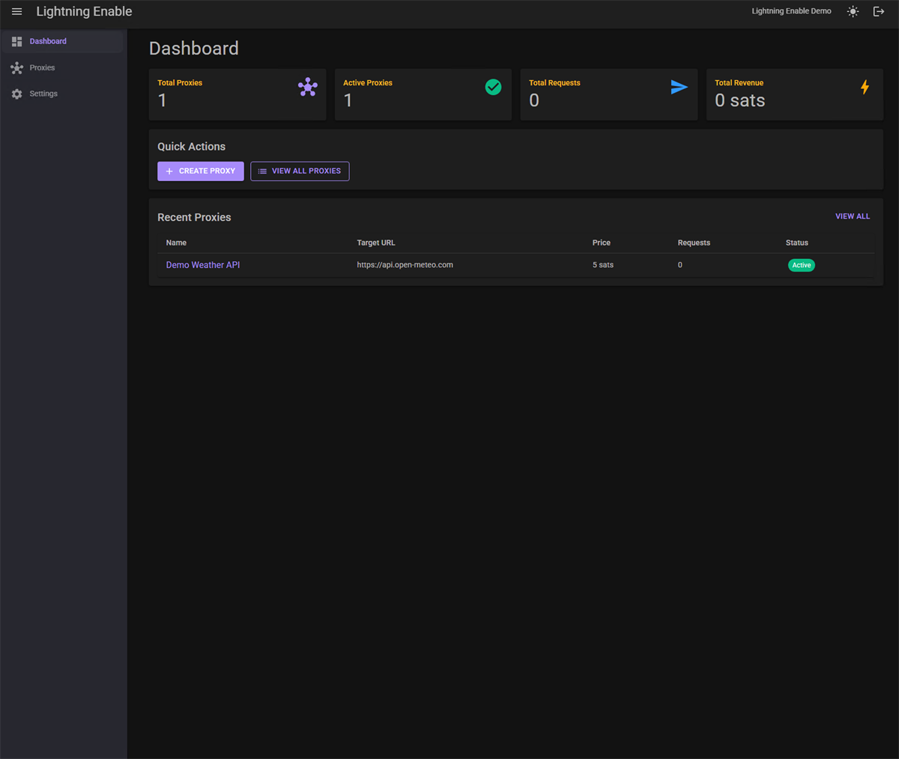
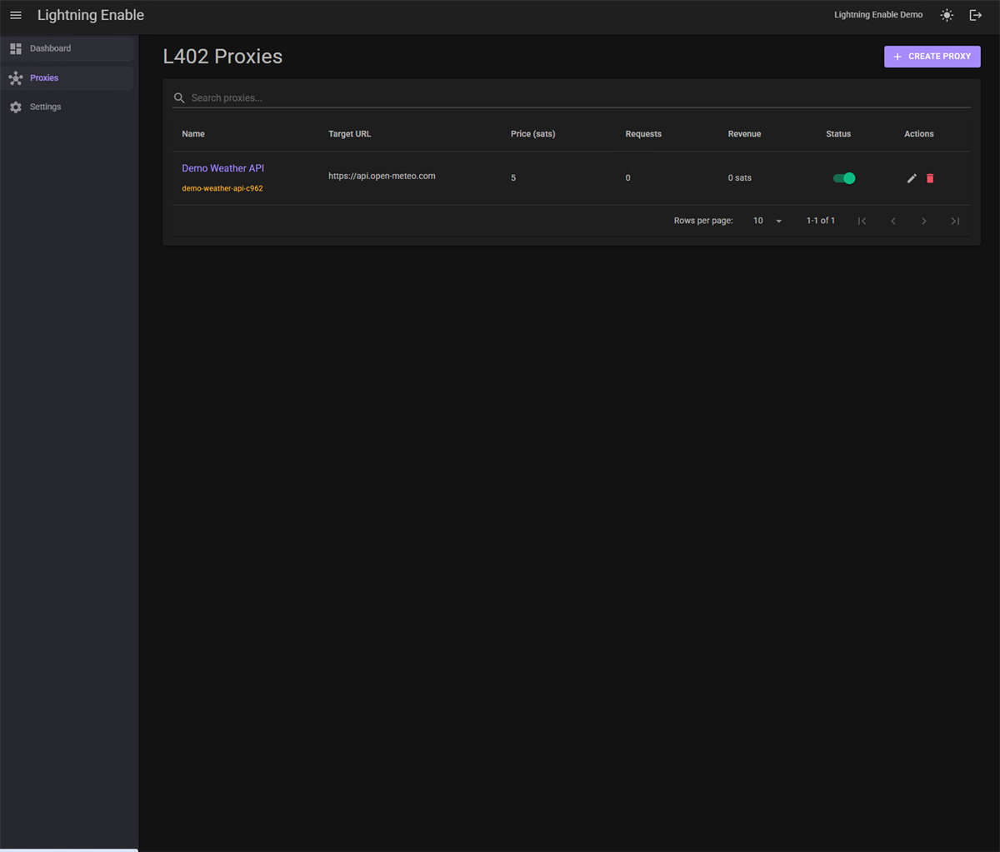
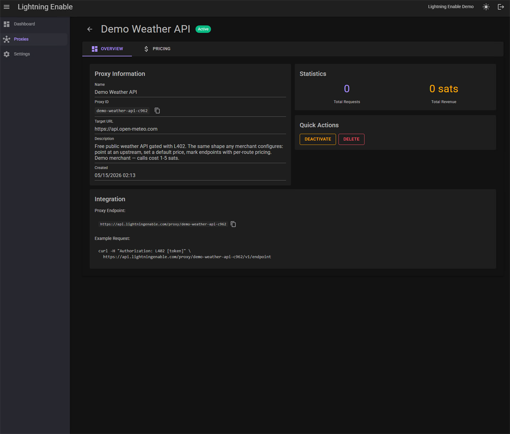
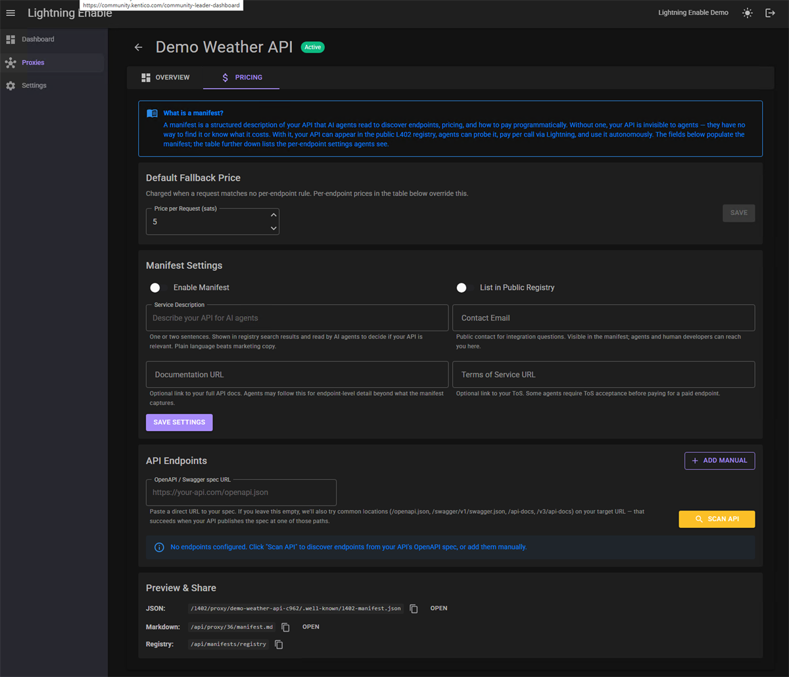

Software paying software, per request, over Lightning. Drop into your existing API — your subscriptions, rate limits, and API keys stay exactly as they are.
Click the button. An autonomous agent on our server hits a paid endpoint, gets a 402 with a Lightning invoice, pays it from a pre-funded wallet, and retries with proof of payment — all in under two seconds. This is exactly what your customers' agents will do against your API once you integrate.
Pick an endpoint:
Demo only — enter just the city name (e.g. "Miami", not "Miami, FL"). Major cities work best; not every city is in the upstream geocoder.
L402 turns payment into authorization. The agent paid the invoice, retried the same request with the preimage as proof, and your API checked the proof and served the response. No accounts, no sign-up, no card on file — just a tiny payment, a cryptographic receipt, and the response.
Building the agent side? Install the MCP server —
dotnet tool install -g LightningEnable.Mcp or
pip install lightning-enable-mcp — and follow the
MCP quickstart.
Lightning Enable is the easiest way to make agents and APIs speak L402 — no node, no hosted MCP, just Strike or NWC. Agents need something to pay for; builders need agents that can pay. Both sides run on the same rail.
They book travel. They search the web. They run workflows. They call APIs. They pay for tools.
But card rails aren't built for them. Stripe assumes a human identity, a checkout flow, a billing address, a fraud history. Agent workflows have none of those — so today, agent traffic gets eaten by the API provider or blocked at the gate.
Lightning per-request payments fit. The agent hits your endpoint, gets a 402, pays in under a second, and retries with proof of payment. You get paid. The agent gets in.
A new buyer class is forming. The cost of ignoring it grows as fast as the agents do.
The middleware is a tiny wrapper around our hosted producer API. Pick your stack, install one package, gate a route with an attribute or a config line.
// .NET 8 / ASP.NET Core minimal API
using L402Server.AspNetCore;
builder.Services.AddL402AspNetCore(opts =>
opts.ApiKey = builder.Configuration["LightningEnable:ApiKey"]);
app.UseL402();
app.MapGet("/api/data", () => data)
.WithMetadata(new L402Attribute { PriceSats = 100 });dotnet add package L402Server.AspNetCore
Prefer to mint challenges yourself? The
L402 Producer API
creates and verifies challenges directly —
POST /api/l402/challenges returns a Lightning invoice +
macaroon for any resource, and
POST /api/l402/challenges/verify checks the proof before
you serve the response.
Set per-endpoint pricing, watch revenue accrue in real Bitcoin, and manage every API you've monetized — without touching code.




Every gated API gets a machine-readable manifest at
/.well-known/l402-manifest.json and can be listed in the
public L402 registry.
Agents running our MCP server find it with discover_api,
see your endpoints and prices, then pay and call — no signup. Prefer
to browse? agent-commerce.store is a live
marketplace of the same listings.
The demo above isn't a mock. Real Bitcoin, real Lightning, same producer API your customers' agents will hit.
L402 ecommerce on Shopify and Kentico. Live storefronts: Great Ghee, Salt of the Earth, and our own Lightning Enable Store — agents and bitcoin-aligned customers checking out in sats. Run this on your Shopify or Kentico store →
MCP clients, agent frameworks, and developer integrations across the Lightning Network. Our MCP server (24 tools) and HTTP clients are MIT, published on every major registry — and agent-commerce.store is a live L402 API marketplace built on the same rails.
Agent Service Agreements are live: agents
discover, hire, and pay each other over Nostr — discover,
request, settle, attest — on our public relay
NostrWolfe
at wss://agents.lightningenable.com.
A flat monthly subscription, never a percentage of your revenue. Lightning Enable is middleware and never holds your funds — your provider (Strike or OpenNode) custodies and settles every payment.
Free Producer Sandbox is a no-card way to prove L402 works. L402 Fast Lane unlocks the full Individual trial with a 100-sat Lightning payment instead of a card. Stripe Trial is the conventional 30-day card trial. All three are live today — pick the on-ramp that fits.
Pay a 100-sat L402 challenge to unlock the full trial. Signup runs on L402: 402 → pay → macaroon proof → activated.
Activate with Lightning →A conventional 30-day trial through Stripe Checkout. No charge until it ends.
Start trial →For solo API builders, indie SaaS, and side-project APIs going to production.
For teams and platforms with multiple APIs or anyone who wants hands-on onboarding help.
Lightning Enable does not hold funds. Your chosen settlement provider (Strike or OpenNode) custodies every payment.
Full plan details, annual pricing, and the Bitcoin discount: lightningenable.com/pricing.
The free open-source MCP, the Free Producer Sandbox, and L402 Fast Lane are all live — here's how they work.
Yes. The Lightning Enable MCP server is open-source (MIT) and free to install. Connect Strike or NWC and your agent can pay and access L402 APIs — no hosted MCP and no Lightning node required.
A no-card way to create your first L402 producer endpoints. It includes 3 endpoints, limited monthly challenge volume, and a 100-sat max challenge price — free enough to prove L402 works, paid when it becomes production infrastructure. Sandbox limits may change as the product evolves; existing users get notice before material changes.
A Bitcoin-native signup path. Pay a 100-sat L402 challenge to activate a 30-day Individual trial without a credit card. The signup flow itself runs on L402: 402 → Lightning payment → macaroon proof → account activated. See Activate with Lightning for the exact steps (MCP, dev CLI, or raw protocol).
Free is the sandbox. Fast Lane is the no-card full trial. The Free Sandbox lets you create a few L402 endpoints with limited usage. Fast Lane unlocks the full Individual plan for 30 days without a credit card.
They're two different things. Pay with Bitcoin — 10% off means paying an actual subscription with Bitcoin instead of a card, for a discount. L402 Fast Lane means paying a 100-sat L402 challenge to activate a no-card 30-day trial.
It proves wallet and payment capability, reduces low-effort abuse, and lets you experience the same L402 flow your own users and agents will use. Use Lightning to activate the Lightning-native trial.
Add billing to keep Individual features. Otherwise, the account automatically moves to the Free Producer Sandbox.
Sign in first. Fast Lane is for creating or activating an account; paying with an email that already belongs to an account will not create a second account.